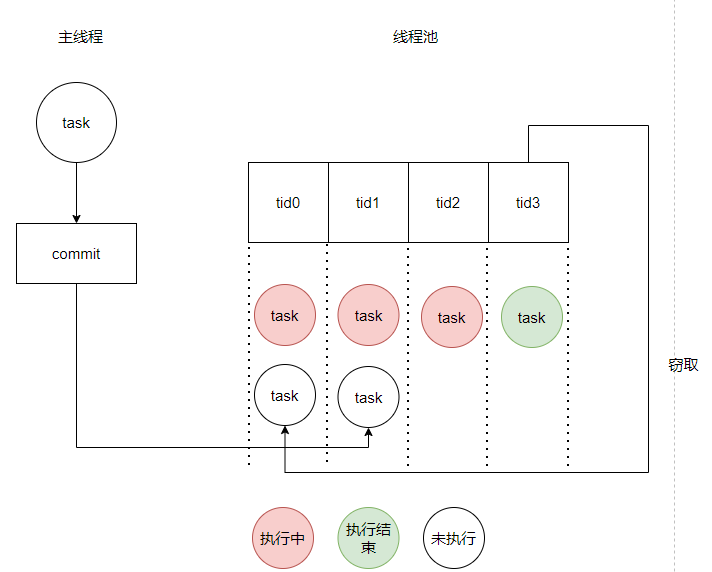

Resource Pool¶
Thread Pool¶
Thread pools are used for managing and reusing threads to improve the execution efficiency of concurrent tasks, which is a common parallel programming technique.
Thread pools have three major functionalities: 1) Task scheduling: Thread pools can accept multiple tasks and decide when to execute tasks based on available thread resources and scheduling strategies. 2) Thread reuse: Threads in the thread pool can be reused without the need to create and destroy threads each time, thereby reducing the overhead of thread creation and destruction. 3) Asynchronous processing: Thread pools can execute tasks asynchronously in the background without blocking the main program, improving the program’s responsiveness.
The thread pool implementation of nndeploy refers to ChunelFeng/CThreadPool, retaining the core functionalities required by the project, with the code located at nndeploy/include/nndeploy/thread_pool/thread_pool.h. The core function of the thread pool is the commit task submission function, which can accept general functions, static functions, class member functions, etc., as task execution functions, returning a std::future object. When the commit is used for task submission, the task is executed asynchronously within the thread pool without blocking. When the std::future’s get() function is called, synchronization is performed.
As shown in the figure below, each thread in the thread pool has a task queue belonging to its own thread, and tasks submitted from the main program are sequentially distributed to each thread, ensuring the load balancing of tasks between threads. When a thread is idle, it can steal a task from another thread that has not yet executed it, reducing the imbalance of thread execution.

After the threads in the thread pool are activated, they will attempt to pop out tasks from their own task queue for execution, or steal tasks for execution. If both fail, the thread will block for a period of time before trying again. When a task is added to the task queue of this thread, the thread will be immediately awakened to perform the execution. After the destroy function of the thread pool is called, a flag is set, and when the thread executes a task and detects this flag, it exits the task execution loop.